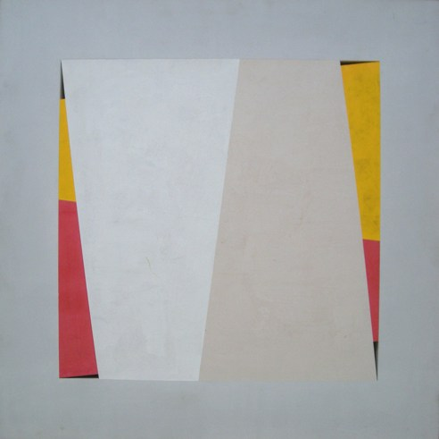

John Carter RA
b.1942
Artist Biography
Middlesex born John Carter attended Kingston College of Art 1959-63. Travelling scholarships to Europe and the United States followed and Carter from 1968 had a series of solo shows at the Redfern Gallery, London. His spare, abstract work won admirers and he continues to exhibit regularly including, in recent years, Sweden, Switzerland and Germany. Redfern gave him a solo show in 2010 and another in 2013. He has taught widely over the years, including at the Royal College of Art and Chelsea College of Art, and was elected RA in sculpture in 2007. The RA gave a solo show of his works on paper in 2013-14. Arts Council holds examples.

Untitled Theme: Elements Superimposed in a Square – Initial Version 1988-89